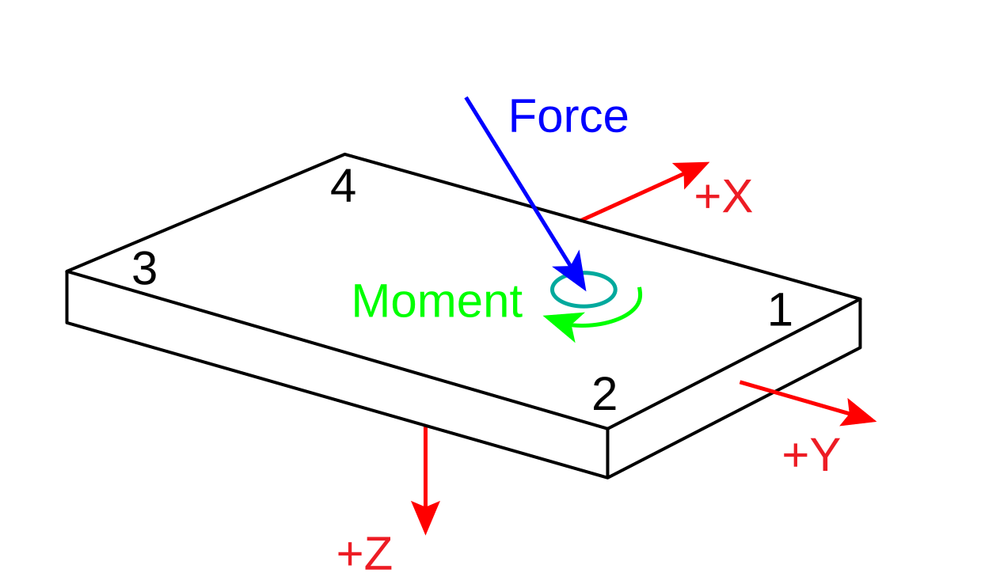

FORCE_PLATFORM:CORNERS
Type: Required
Locked: False
The FORCE_PLATFORM:CORNERS parameter is a floating-point array of dimension [3,4,USED] that record the locations of the force platform corners in the reference coordinate system, measured in POINT:UNITS. This parameter is used by any graphics application to draw the force platforms, force vectors, and center of pressure information in the correct locations relative to the 3D point data.
Despite the official documentation stipulating that
The first dimension specifies the X, Y, or Z coordinate.
The second dimension specifies the corners.
The corners are numbered from 1 to 4 and refer to the quadrant numbers in the X-Y plane of the force platform coordinate system (not the 3D point reference coordinate system).
With respect to the force plate coordinate system (\(X\), \(Y\), \(Z\)):
- Corner 1: [+1, +1, 0]
- Corner 2: [-1, +1, 0]
- Corner 3: [-1, -1, 0]
- Corner 4: [+1, -1, 0]

The third dimension specifies the force plates index, in reference to FORCE_PLATFORM:USED. Its value is therefore